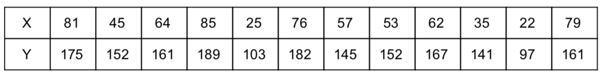
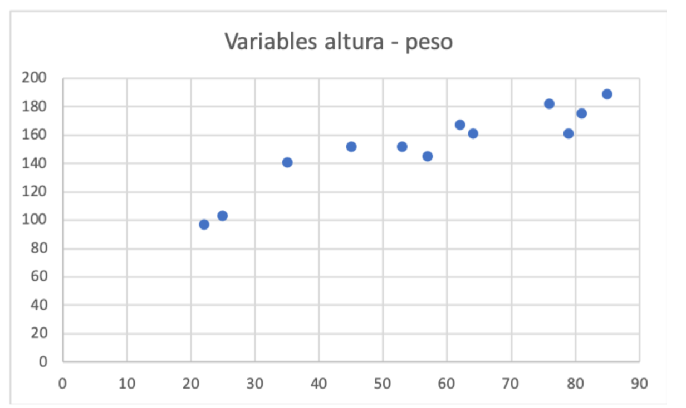
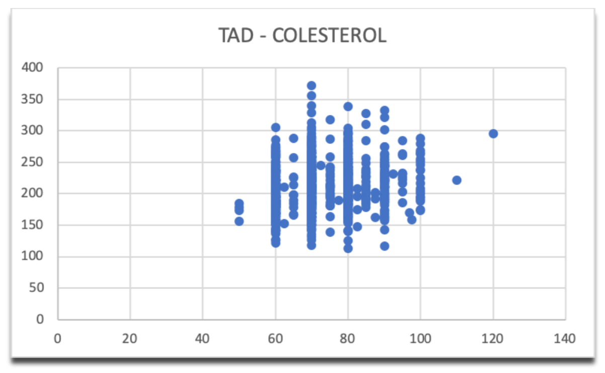
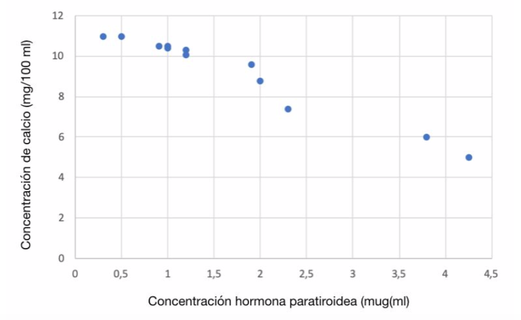
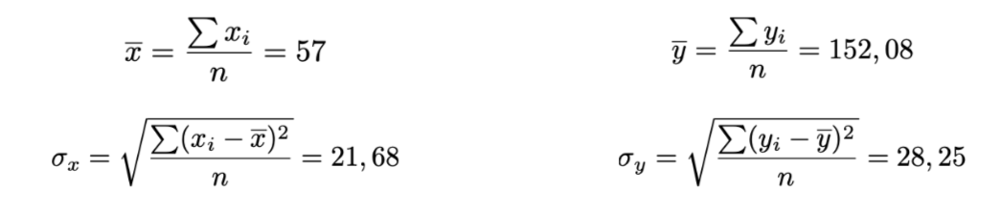
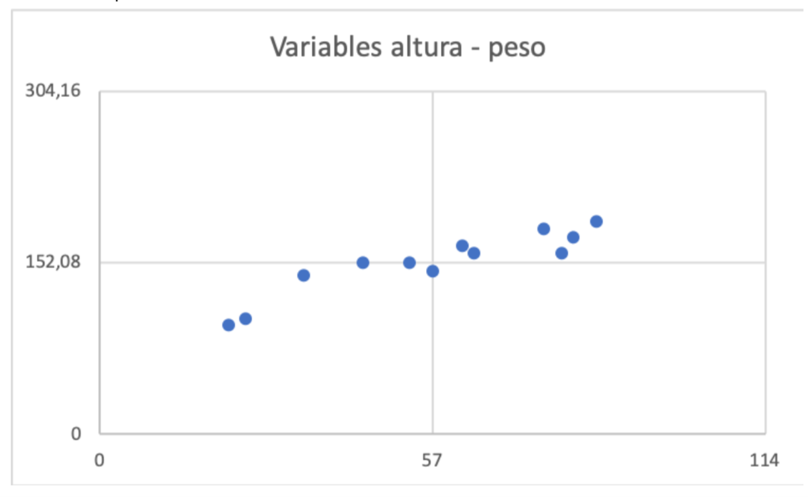
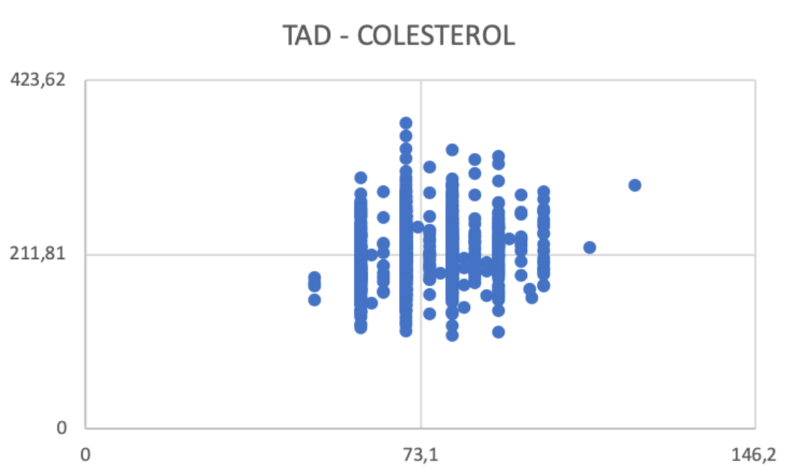

Capítulo 3 Relación entre variables
Una vez estudiada descriptivamente una variable, vamos a proceder a estudiar la relación entre dos o más variables de un modo descriptivo. Entendemos que existe relación o dependencia entre dos variables cuando un cambio en el valor de una de ellas se asocia a un cambio en el de la otra. Si no es el caso, se habla de independencia de variables. Vamos a estudiar la relación entre dos variables numéricas y trataremos muy brevemente el estudio de la relación entre una variable cualitativa y otra numérica terminando con el estudio de la relación entre variables cualitativas.
De este modo, veremos cómo calcular valores que nos van a indicar la relación entre variables así como realizar representaciones gráficas que nos van a ayudar a interpretar esas posibles relaciones.
3.1 Variables numéricas
Para llevar a cabo el estudio de la relación entre dos variables numéricas es preciso efectuar un análisis previo de las mismas por separado. Para ello, la representaremos gráficamente y calcularemos los respectivos valores típicos.
Para unificar la notación empleada, consideremos n individuos sobre los que se han medido 2 variables cuantitativas llamadas X e Y. De este modo, obtenemos n pares de datos numéricos representados por (\(x_i\), \(y_i\)) donde i = 1,2, …, n.
Veamos un sencillo ejemplo: en la siguiente tabla podemos observar el peso X (kg.) y la estatura Y (cm.) de 12 personas:

Debemos comenzar con un estudio estadística descriptivo de cada variable por separado, que podría incluir sendos histogramas, así como al menos una medida de centralización y otra de dispersión (generalmente la media y la desviación típica). A continuación, vamos a realizar el estudio descriptivo de la relación entre ambas variables.
3.1.1 Diagramas de dispersión
Para representar gráficamente las dos variables se utilizan los diagramas de dispersión o nubes de puntos. Son gráficos que se obtiene al representar en unos ejes de coordenadas todos los pares correspondientes a los datos observados. En nuestro ejemplo, el diagrama de dispersión quedaría:

En este otro caso, tenemos representada la relación entre la tensión arterial diastólica (TAD) y el nivel de colesterol medidos en n = 1000 adultos:

En el primer caso, vemos una relación directa (o positiva) entre las variables peso y altura, es decir, el aumento de una implica el aumento en la otra. Daría lo mismo si hubiésemos representado las variables cambiadas de eje, la relación se mantendría. En el segundo caso, ya no es tan evidente la relación entre variables TAD - colesterol.
Finalmente, en este diagrama de dispersión para las variables concentración de hormona paratiroidea, [Pth], y concentración de calcio, [Ca]:

Observamos que hay una relación inversa o negativa, pues el aumento en la concentración de la hormona se asocia a una disminución del calcio en sangre.
En los ejemplos presentados, la relación entre variables es constante, es decir, las nubes de puntos se agrupan en torno a una línea recta que puede ser creciente o decreciente o que será plana cuando la relación sea nula. Este tipo de relación se denomina lineal y es el objeto principal de estudio en este capítulo. Con ello no queremos decir que sea la única relación posible, aunque sí es la más sencilla.
3.1.2 Covarianza
Vamos a obtener unos valores que cuantifiquen la relación entre variables que acabamos de ver. Para ello, vamos a utilizar el ejemplo de las alturas y pesos de las n = 12 personas anterior:
En este caso, la media y desviación típica de cada variable es:

Un valor que relacione las 2 variables debe incluir información aportada por ambas. Se define así la covarianza (\(\sigma_{xy}\)) como:
\(\sigma_{xy}=\frac{\sum(x_i-\overline{x})(y_i-\overline{y})}{n}\)
Es decir, se multiplica la desviación a la media correspondiente de cada par de datos, se suman y se divide por el número total de pares de datos.
La covarianza puede ser tanto positiva como negativa y su valor está comprendido entre los siguientes valores:
\(-\sigma_x\cdot \sigma_y \leq \sigma_{xy} \leq \sigma_x\cdot \sigma_y\)
En nuestro ejemplo, la covarianza estará medida en kg·cm y estará entre -612,64 y +612,64. Utilizando la hoja de cálculo, obtenemos para nuestro ejemplo que \(\sigma_{xy}\) = 566.27 kg·cm.
Vamos a interpretar ese valor. Si representamos el diagrama de dispersión añadiendo las líneas correspondientes a las medias vemos 4 cuadrantes:

Los puntos situados en los cuadrantes superior derecha e inferior izquierda, aportan valores positivos a la suma \((x_i-\overline{x})(y_i-\overline{y})\) mientras que los puntos en los otros 2 cuadrantes (superior izquierdo e inferior derecho) aportan valores negativos. En nuestro ejemplo, son mayoría los valores positivos por lo que la suma resultante es un número positivo grande (566.27) en relación a los valores de las variables y al máximo valor que puede tomar (\(\sigma_x \cdot \sigma_y\)) = 612.64).
3.1.3 Coeficiente de correlación
Como hemos visto, la covarianza tiene una unidad de medida igual al producto de las unidades de medida de las variables y un valor que depende de las desviaciones típicas de las mismas. Para obtener un valor sin unidades que nos relacione la dependencia de variables, se define el coeficiente de correlación lineal de Pearson (\(r_{xy}\)) como el cociente entre la covarianza y el producto de las desviaciones típicas de las variables, es decir:
\(r_{xy}=\frac{\sigma_{xy}}{\sigma_x \cdot \sigma_y}\)
Se suele representar simplemente como r, no tiene unidades (es adimensional) y toma valores entre -1 y 1. Así, cuanto más cerca esté de 1, la correlación (dependencia entre variables) ser ámás fuerte y positiva, cuanto más cerca esté de -1, la correlación será fuerte y negativa. Cuando tome valores cercanos a 0, los datos no están correlacionados.
En nuestro ejemplo sobre pesos y altura de 12 personas, el coeficiente de correlación es 0,924, valor que confirma lo que habíamos observado en el diagrama de dispersión: correlación fuerte positiva entre las variables peso y altura.
En el caso del ejemplo TAD - colesterol, el valor de r es 0,187, es decir, no hay correlación o la correlación es muy débil lo que queda claro observando el diagrama de dispersión con las líneas de referencia en las medias con muchos puntos en los 4 cuadrantes:

Finalmente, en el ejemplo de las variables concentración de hormona paratiroidea, [Pth], y concentración de calcio, [Ca]:
el valor de r es -0,982 lo que conforma la correlación fuerte negativa observada en el diagrama de dispersión.
3.1.4 Correlación entre 2 variables numéricas (Práctica)
Para realizar esta práctica, debe tener descargado en su ordenador el archivo 2.practicas.xlsx y abrir la hoja/pestaña correspondiente.
En el siguente vídeo se muestran los pasos para realizar la práctica.
3.1.5 Regresión lineal
Como hemos comentado, cuando hay una correlación lineal fuerte, los puntos se pueden “ajustar” a una recta que minimice las distancias de los puntos a dicha recta. Esto es importante cuando una de las variables puede medirse de forma sencilla y la otra no ya que puede usarse una variable para pronosticar el valor de la otra,
Así, llamamos recta de regresión a la recta que mejor se ajusta a una nube de puntos. La regresión pretende explicar el comportamiento de una variable según los valores que toma la otra . Si deseamos saber el valor de la variable Y según los valores que toma X, la regresión de llama de Y sobre X. La recta de regresión de Y sobre X debe hacer mínima la suma de las distancias entre las ordenadas de cada punto y la recta. Su expresión será de la forma
\(Y=B_0+B_1X\)
Así, conocidos \(B_0\) y \(B_1\), con un valor de X podemos estimar el correspondiente valor de Y. Matemáticamente, la ecuación de la recta de regresión se obtiene con:
\(y-\overline{y}=\frac{\sigma_{xy}}{\sigma_x^2}(x-\overline{x})\)
En el ejemplo de las alturas y los pesos, tenemos:
\(\overline{x}=57\), \(\overline{y}=152.08\), \(\sigma_x=21.68\) y \(\sigma_{xy}=566.27\).
de donde la ecuación de la recta de regresión es:
\(y-152.08=\frac{566.27}{21.68^2}(x-57)\)
Calculando y despejando y, obtenemos la ecuación de la recta de regresión:
\(y=83.434+1.2044x\).
Así, dando un valor a x (peso), a partir de los datos podemos estimar un valor y (altura) en base a los datos disponibles.
3.1.6 Regresión (Práctica)
Para realizar esta práctica, debe tener descargado en su ordenador el archivo 2.practicas.xlsx y abrir la hoja/pestaña correspondiente.
En el siguente vídeo se muestran los pasos para realizar la práctica.
3.1.7 Regresión lineal múltiple
Hay situaciones en las que queremos estimar en valor de una variable Y en función no de una sino de varias variables \(X_1\), \(X_2\), … , \(X_n\). Es lo que se conoce como regresión lineal múltiple.
Si suponemos 3 variables \(X_1\), \(X_2\) y \(X_3\), el objetivo es encontrar una ecuación del tipo:
\(Y=B_0+B_1X_1+B_2X_2+B_3X_3\)
Con Excel® es posible encontrar esos coeficientes \(B_1\), \(B_2\) y \(B_3\) mediante el complemento de análisis de datos.